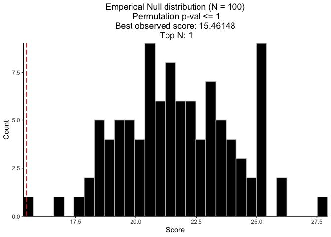

CaDrA.shiny


An R Shiny Dashboard for Interacting with CaDrA Package
CaDrA Package: https://montilab.github.io/CaDrA/
Web Portal: https://cadra.bu.edu/
Overview
CaDrA-shiny is an interactive R Shiny dashboard developed to allow users to directly interact with the CaDrA package. CaDrA is an R package that supports a heuristic search framework aimed at identifying candidate drivers of a molecular phenotype of interest (visit our Github repo for more details).
The CaDrA’s shiny dashboard has two distinctive features:
- Run CaDrA search to identify candidate drivers of a molecular phenotype of interest.
- Run GSVA to estimate aggregate enrichment scores by projecting a (gene) expression dataset onto a given gene set or signature, usually representing a molecular phenotype.
Data visualizations include:
- Meta-feature plot.
- Kolmogorov Smirnov (KS) enrichment plot.
- Top N candidates overlapping heatmap.
- Permutation plot.
The CaDrA.shiny package is already containerized using Docker and can be deployed on any Cloud-based services.
Docker image: montilab/cadra-shiny
(1) Installation
# Install BiocManager
if (!require("BiocManager", quietly = TRUE))
install.packages("BiocManager")
# The following initializes usage of Bioc devel
BiocManager::install(version='devel')
# Install CaDrA
BiocManager::install("CaDrA")
# Install GSVA
BiocManager::install("GSVA")
# Install hypeR
library(devtools)
devtools::install_github("montilab/hypeR")
# Install CaDrA.shiny
devtools::install_github("montilab/CaDrA.shiny")
# Install knitr
install.packages("knitr", repos="http://cran.us.r-project.org")(3) Run CaDrA with dataset downloaded from CaDrA Portal
Here, we show how to run CaDrA on a dataset downloaded from the CaDrA Portal, using input_score’s derived by applying GSVA to the downloaded gene expression dataset and the Hallmarks genesets. We will run a CaDrA search to look for genetic drivers of the “Epithelial Mesenchymal Transition” (EMT)-derived score.
(i) Retrieve a list of descriptors of pre-processed feature sets available on the portal
## Get a list of descriptors of feature sets available on CaDrA Portal
fs_list <- CaDrA.shiny::get_feature_set(order_by="asc")| description | feature_set_name |
|---|---|
| ACC | TCGA_ACC_2016_01_28_GISTIC_MUT_SIG |
| BLCA | TCGA_BLCA_2016_01_28_GISTIC_MUT_SIG |
| BRCA | TCGA_BRCA_2016_01_28_GISTIC_MUT_SIG |
| CESC | TCGA_CESC_2016_01_28_GISTIC_MUT_SIG |
| CHOL | TCGA_CHOL_2016_01_28_GISTIC_MUT_SIG |
| COADREAD | TCGA_COADREAD_2016_01_28_GISTIC_MUT_SIG |
(ii) Retrieve datasets from the portal
## Retrieve the ACC dataset (both genetic feature set and gene expression)
datasets <- CaDrA.shiny::pull_datasets(
feature_set = "TCGA_ACC_2016_01_28_GISTIC_MUT_SIG",
include_gene_expression = TRUE
)
datasets$feature_set
class: RangedSummarizedExperiment
dim: 7119 88
metadata(3): experimentData annotation protocolData
assays(1): exprs
rownames(7119): Amp1q22 Amp4p16.3 ... ZZEF1 ZZZ3
rowData names(1): Feature
colnames(88): TCGA-OR-A5J1-01 TCGA-OR-A5J2-01 ... TCGA-PK-A5HB-01
TCGA-PK-A5HC-01
colData names(0):
$gene_expression
class: RangedSummarizedExperiment
dim: 19777 79
metadata(3): experimentData annotation protocolData
assays(1): exprs
rownames(19777): IGF2 DLK1 ... TGM6 SPANXA2
rowData names(1): Genes
colnames(79): TCGA-OR-A5J1-01 TCGA-OR-A5J2-01 ... TCGA-PK-A5HA-01
TCGA-PK-A5HB-01
colData names(1): Samples(iii) Run GSVA on the downloaded expression dataset
## download MSigDB’s Hallmark genesets
hallmarks <- hypeR::msigdb_gsets("Homo sapiens", "H", clean=TRUE)$genesets # returns 50 genesets
# Compute the gsva scores of the 50 hallmark genesets
input_score_matrix <- GSVA::gsva(
expr = SummarizedExperiment::assay(datasets$gene_expression),
gset.idx.list = hallmarks,
method = "gsva",
mx.diff = TRUE,
verbose = FALSE
)
## Show few entries of the returned hallmark-by-sample matrix
knitr::kable(input_score_matrix[1:5, 1:5])| TCGA-OR-A5J1-01 | TCGA-OR-A5J2-01 | TCGA-OR-A5J3-01 | TCGA-OR-A5J5-01 | TCGA-OR-A5J6-01 | |
|---|---|---|---|---|---|
| Adipogenesis | -0.0534716 | -0.2768861 | 0.0953223 | -0.4063615 | 0.4394275 |
| Allograft Rejection | -0.0744033 | -0.0621729 | -0.3521640 | -0.3018557 | 0.1431379 |
| Androgen Response | -0.1832658 | 0.0855770 | 0.1389136 | -0.5098008 | -0.0719647 |
| Angiogenesis | -0.1895439 | 0.2684503 | 0.2747169 | -0.1479879 | -0.4408048 |
| Apical Junction | -0.1188141 | 0.1778803 | 0.0797656 | 0.0144147 | -0.1364014 |
(iv) Run candidate search with input scores obtained in (iii)
## Samples to keep based on the overlap between the two inputs
sample_overlap <- intersect(colnames(input_score_matrix), colnames(datasets$feature_set))
input_score <- input_score_matrix["Epithelial Mesenchymal Transition", sample_overlap]
FS <- datasets$feature_set[, sample_overlap, drop = FALSE]
## Pre-filter FS based on occurrence frequency
FS_filtered <- CaDrA::prefilter_data(
FS = FS,
max_cutoff = 0.6, # max event frequency (60%)
min_cutoff = 0.03 # min event frequency (3%)
)
## Run candidate search
topn_result <- CaDrA::candidate_search(
FS = FS_filtered,
input_score = input_score,
method = "ks_pval", # Use Kolmogorov-Smirnov scoring function
weights = NULL, # If weights are provided, perform a weighted-KS (gsea-like) test
alternative = "less", # Use one-sided hypothesis testing
search_method = "both", # Apply both forward and backward search
top_N = 1, # Perform only one search (starting from top scoring feature)
max_size = 7, # Maximum number of features to include in the returned meta-feature
do_plot = FALSE, # Plot after finding the best features
best_score_only = FALSE # Return meta-feature set, observed input scores, and calculated best score
)(v) Visualize Best Results
## Fetch the meta-feature yielding the best score over N searches
## .. (in this example, only N=1 search was performed)
topn_best_meta <- CaDrA::topn_best(topn_result)
## Visualize the best results with the meta-feature plot
CaDrA::meta_plot(topn_best_list = topn_best_meta, input_score_label = NULL)
(vi) Compute permutation-based p-value
## Permutation seed (for reproducible results)
set.seed(123)
## Run CaDrA Search 1000 times on permuted input scores to estimate the null distribution
perm_res <- CaDrA::CaDrA(
FS = FS_filtered,
input_score = input_score,
method = "ks_pval",
top_N = 1,
max_size = 7,
search_method = "both",
n_perm = 1000,
ncores = 1
)
## Visualize permutation results
permutation_plot(perm_res = perm_res)
(4) Launch CaDrA’s Shiny App with your pre-proccessed dataset
Here, we show how to launch a local instance of the CaDrA Portal, which will be populated with a user-selected set of datasets. In the example, a single dataset (ACC) will be uploaded to the portal.
(i) Pull pre-processed feature sets using our REST API
# Download feature sets and return a datalist with appropriate paths to dataset
mydatafile <- CaDrA.shiny::download_feature_sets(
#feature_set = fs_list$feature_set_name, # this would download all TCGA datasets
feature_set = "TCGA_ACC_2016_01_28_GISTIC_MUT_SIG",
include_input_score = TRUE,
include_gene_expression = TRUE,
out_dir = file.path(Sys.getenv("HOME"),"Github") # specify your folder of choice here
)| feature_set_name | feature_set_path | input_score_name | input_score_path | gene_expression_name | gene_expression_path |
|---|---|---|---|---|---|
| TCGA_ACC_2016_01_28_GISTIC_MUT_SIG | /Users/reinachau/Github/download-fs-2023-10-18/TCGA_ACC_2016_01_28_GISTIC_MUT_SIG/feature_set/TCGA_ACC_2016_01_28_GISTIC_MUT_SIG.rds | NA | /Users/reinachau/Github/download-fs-2023-10-18/TCGA_ACC_2016_01_28_GISTIC_MUT_SIG/input_score/NA | TCGA_ACC_2016_01_28_Gene_Expression | /Users/reinachau/Github/download-fs-2023-10-18/TCGA_ACC_2016_01_28_GISTIC_MUT_SIG/gene_expression/TCGA_ACC_2016_01_28_Gene_Expression.rds |
| TCGA_ACC_2016_01_28_GISTIC_MUT_SIG | /Users/reinachau/Github/download-fs-2023-10-18/TCGA_ACC_2016_01_28_GISTIC_MUT_SIG/feature_set/TCGA_ACC_2016_01_28_GISTIC_MUT_SIG.rds | HALLMARK_TNFA_SIGNALING_VIA_NFKB | /Users/reinachau/Github/download-fs-2023-10-18/TCGA_ACC_2016_01_28_GISTIC_MUT_SIG/input_score/HALLMARK_TNFA_SIGNALING_VIA_NFKB.rds | TCGA_ACC_2016_01_28_Gene_Expression | /Users/reinachau/Github/download-fs-2023-10-18/TCGA_ACC_2016_01_28_GISTIC_MUT_SIG/gene_expression/TCGA_ACC_2016_01_28_Gene_Expression.rds |
| TCGA_ACC_2016_01_28_GISTIC_MUT_SIG | /Users/reinachau/Github/download-fs-2023-10-18/TCGA_ACC_2016_01_28_GISTIC_MUT_SIG/feature_set/TCGA_ACC_2016_01_28_GISTIC_MUT_SIG.rds | HALLMARK_HYPOXIA | /Users/reinachau/Github/download-fs-2023-10-18/TCGA_ACC_2016_01_28_GISTIC_MUT_SIG/input_score/HALLMARK_HYPOXIA.rds | TCGA_ACC_2016_01_28_Gene_Expression | /Users/reinachau/Github/download-fs-2023-10-18/TCGA_ACC_2016_01_28_GISTIC_MUT_SIG/gene_expression/TCGA_ACC_2016_01_28_Gene_Expression.rds |
| TCGA_ACC_2016_01_28_GISTIC_MUT_SIG | /Users/reinachau/Github/download-fs-2023-10-18/TCGA_ACC_2016_01_28_GISTIC_MUT_SIG/feature_set/TCGA_ACC_2016_01_28_GISTIC_MUT_SIG.rds | HALLMARK_CHOLESTEROL_HOMEOSTASIS | /Users/reinachau/Github/download-fs-2023-10-18/TCGA_ACC_2016_01_28_GISTIC_MUT_SIG/input_score/HALLMARK_CHOLESTEROL_HOMEOSTASIS.rds | TCGA_ACC_2016_01_28_Gene_Expression | /Users/reinachau/Github/download-fs-2023-10-18/TCGA_ACC_2016_01_28_GISTIC_MUT_SIG/gene_expression/TCGA_ACC_2016_01_28_Gene_Expression.rds |
| TCGA_ACC_2016_01_28_GISTIC_MUT_SIG | /Users/reinachau/Github/download-fs-2023-10-18/TCGA_ACC_2016_01_28_GISTIC_MUT_SIG/feature_set/TCGA_ACC_2016_01_28_GISTIC_MUT_SIG.rds | HALLMARK_MITOTIC_SPINDLE | /Users/reinachau/Github/download-fs-2023-10-18/TCGA_ACC_2016_01_28_GISTIC_MUT_SIG/input_score/HALLMARK_MITOTIC_SPINDLE.rds | TCGA_ACC_2016_01_28_Gene_Expression | /Users/reinachau/Github/download-fs-2023-10-18/TCGA_ACC_2016_01_28_GISTIC_MUT_SIG/gene_expression/TCGA_ACC_2016_01_28_Gene_Expression.rds |
| TCGA_ACC_2016_01_28_GISTIC_MUT_SIG | /Users/reinachau/Github/download-fs-2023-10-18/TCGA_ACC_2016_01_28_GISTIC_MUT_SIG/feature_set/TCGA_ACC_2016_01_28_GISTIC_MUT_SIG.rds | HALLMARK_WNT_BETA_CATENIN_SIGNALING | /Users/reinachau/Github/download-fs-2023-10-18/TCGA_ACC_2016_01_28_GISTIC_MUT_SIG/input_score/HALLMARK_WNT_BETA_CATENIN_SIGNALING.rds | TCGA_ACC_2016_01_28_Gene_Expression | /Users/reinachau/Github/download-fs-2023-10-18/TCGA_ACC_2016_01_28_GISTIC_MUT_SIG/gene_expression/TCGA_ACC_2016_01_28_Gene_Expression.rds |
There are five tabs on CaDrA’s Dashboard. Explore each tab and see what they do:

Getting Help
To get help with CaDrA, visit our Github dicussion or Github issues.
To get help with CaDrA.shiny, visit our Github dicussion or Github issues.